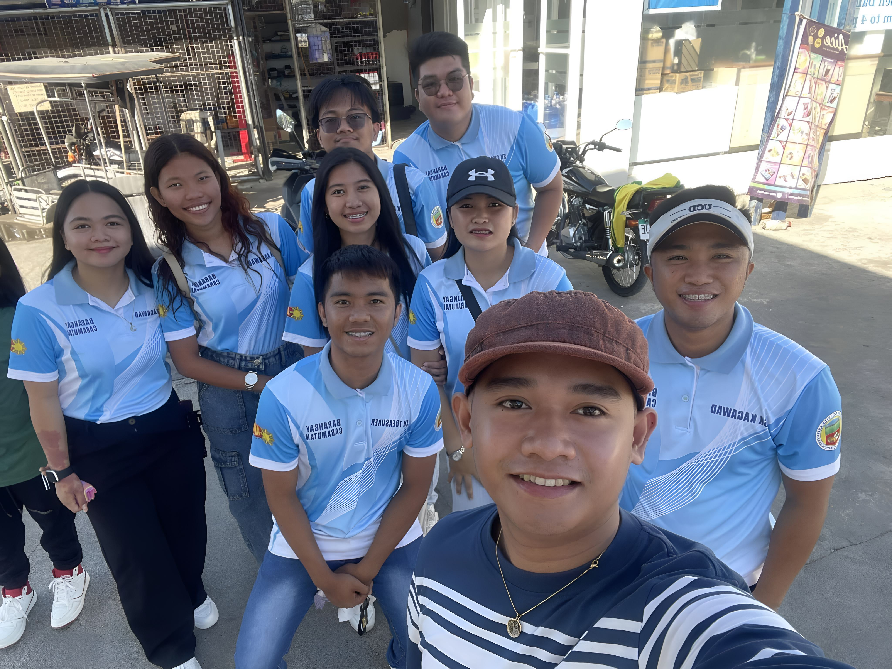
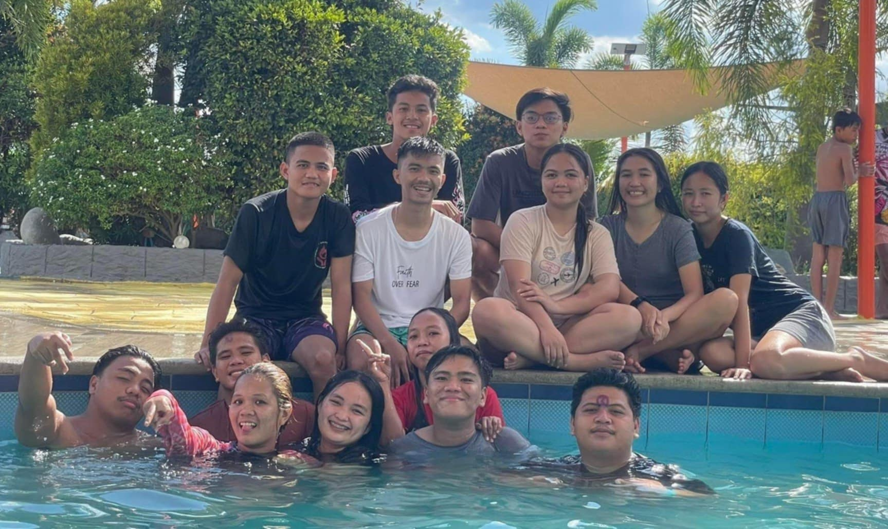
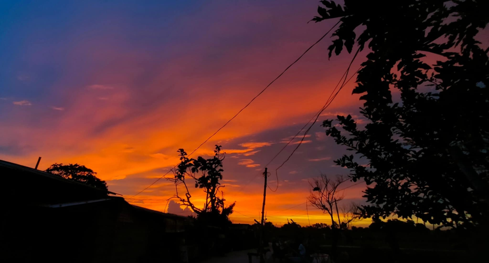

| Hi I'm Jayson Sarmiento Obillo, a Bachelor of Science in Information Technology student fronm Pangasinan State University-Asingan Campus. I'm already 22 years old and I'm From Caramutan, Villasis, Pangasinan. I am always open to learn and discover new skills, as I believe in the importance of continuous personal growth. I enjoy exploring different areas of knowledge, whether it’s through new experiences or by learning something that can enhance my abilities. I am passionate about finding ways to expand my skill and deepen my understanding in different fields.Every opportunity to learn and expand my skill excites me, as I know it helps me become more valuable. | I am actively involved in the Sangguniang Kabataan (TREASURER), where I have the opportunity to serve and contribute to the community's development. Through this role, I have learned the importance of leadership, teamwork, and the value of creating programs that cater to the needs of the youth. I am passionate about empowering young people and creating positive change within our community by initiating activities and projects that promote education, health, social welfare and sports. It is now my second time in this position, and I can truly say that it feels wonderful to serve. I'm very thankful to have this opportunity to lead and collaborate with others in making a difference. | I am lucky to have a great group of friends who are from the same barangay as me. We have known each other for a long time, as we have been batchmates since elementary school. Over the years, our friendship has only grown stronger. We support each other in everything we do, whether it’s in school, in our community, or just in our everyday lives. Having these friends by my side has made my journey more meaningful, and I’m grateful to share so many memories and experiences with them. Our friendship has grown into something that I truly value, and I feel grateful every day to have these amazing people around me. We have a deep understanding of one another. | I loved sunsets. There’s something so special about watching the sky change from bright colors to soft shades of orange, pink, and purple. It gives me a feeling of calm and comfort, as if the world slows down for a moment. Whenever I watch the sunset, I feel like I can take a break from everything happening around me. It’s a time for me to relax, reflect on my day, and just enjoy the beauty of nature. I find it so peaceful, and it helps me clear my mind. Sunsets remind me to appreciate the little moments in life, to slow down, and to be grateful for what I have. It’s a simple, but beautiful way to feel connected to the world around me. It is a very grateful moment to end a very heavy and exhausting day. |
|---|